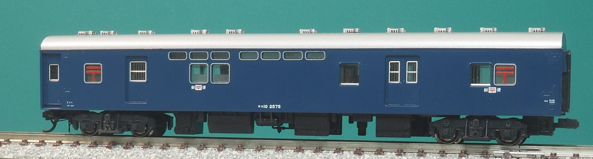
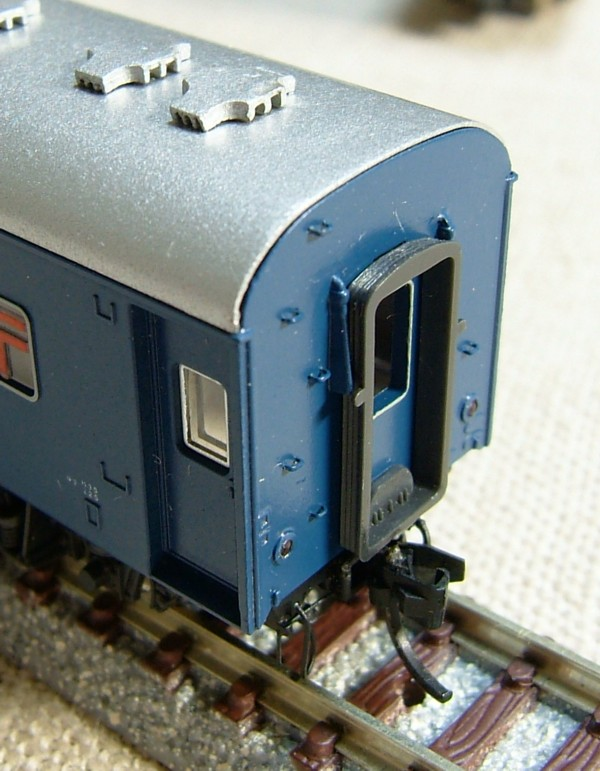
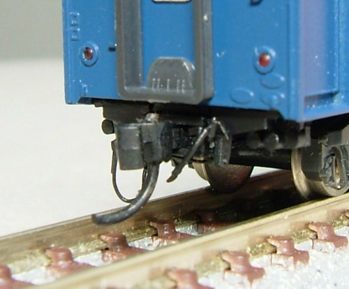
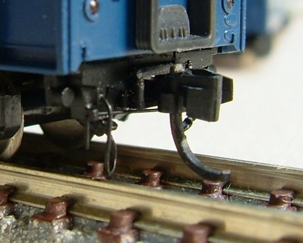
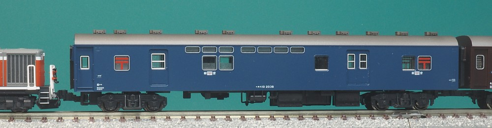
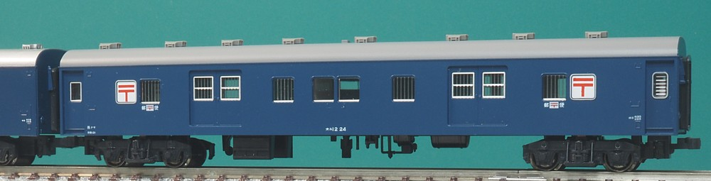
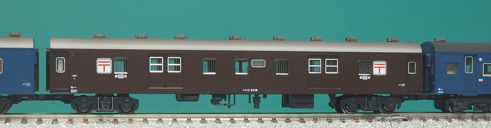
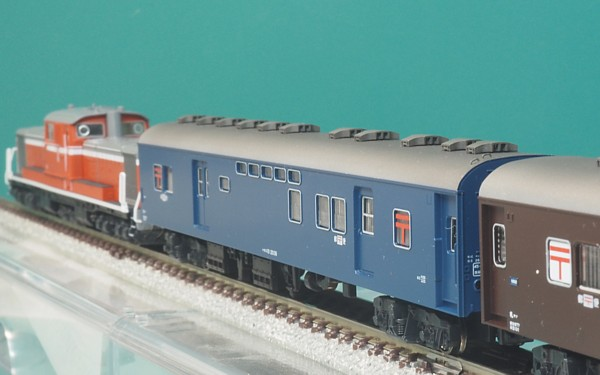

KATOのオユ10は、ナハ11・ナハフ11とともに10系寝台車群にやや遅れて発売となりました。 当初は冷改車のみの発売で、なぜかテールライトは非点灯という仕様。 「ニセコ」発売に際して非冷房の仕様が追加されています。 たしかこの時にテールライトが点灯となり、それが冷改に逆輸入されてテールライトが点灯するようになりました。
全車が冷房化されたスロ62と異なり、オユ10のほうは17両が最後まで非冷房でした。 調べてみると宇高連絡船による航送用の車両は非冷房だったとの情報もあり、 一方で青函連絡船による対北海道の航送用の車両は早々に冷房化されて14系ニセコにも冷房化された オユ10が連結されています。このあたりよくわからん…。 消火設備の差でもあったんですかね。
こちらは「ニセコ」とともに非冷房仕様が発売されるよりも前に
冷改車の妻面・屋根をナハ11のものに置き換えて(屋根のベンチレーターは並べ替えて)非冷房化したものです。
KATOのオユ10、雨どいの位置がナハ11よりも0.5mmくらい高く、一方で車体裾の高さはナハ11と同じで要するに
車体側面の高さがナハ11よりも大きくなっています。
これにナハ11の屋根をのせると屋根が高くなってしまうため、台車の取り付け時に台車側を
削って車高を調整しました。
後から発売された「ニセコ」のオユ10の非冷房仕様のほうは屋根の高さをやや浅くしてこの部分を調整していますので、
この写真と↓のニセコを比べるとこちらのほうがどっしりとした雰囲気でこれはこれでよいです。
ナンバーは冷改車のまんま、床下にディーゼル発電機もついちゃってますが端梁の改造もありこのまんまだと思います。

妻面です。
今はすっかり標準となっている手すりの別パーツ化は、実はこの車両から。
オユ10を非冷房化したとき、やむを得ずはじめたのがきっかけでした。
端梁も作りこんでいますが、それは下で。


端梁です。開放テコ／エアホース／電気暖房用ジャンパを取り付けました。
10系の端梁は形が特徴的で良く目立つため、なかなかよいです。
ナハフ11にも同じ加工をする予定。

「ニセコ」で新規作成された非冷房のオユ10です。
ディーゼル発電機のない床下も新規作成され、すっきりしました。
上述の通り屋根がわずかに浅く作られて寸法を調整しており、
横のオユ12と比べると実際屋根が浅くなってるのがわかります。
まぁ写真でまじまじ見ない限りわかりませんが…。
蒸気機関車にけん引される客車っぽく、屋根を汚しました。 ほんとは真っ黒だったっぽいですが、ほどほどにしてます。

オユ10と同世代の護送便専用車です。
KATOからオロ11、オハニ36あたりとともに唐突に発売された記憶があります。 後から考えるとオロ11は日南、オユ12はニセコでスユ13として使用されていますから 最初からそのあたりを狙ってのものだったのかもしれません。
模型はグレードアップパーツを取り付けただけもの。 護送便専用車ということもあり車体も単調、屋根も単調な車両だったのですが ベンチレーターが別パーツになるだけでけっこうよい雰囲気になります。屋根は追って塗装予定。

スユ13はオユ12に電気暖房を取り付けたため重量区分が変わって形式が変わった車両です。 車体はオユ12と同一。
「ニセコ」に含まれるものです。 本物は床下に電暖トランスが付きますが、KATOは電暖トランスを基本的に個別に再現しませんので 床下もすっきり仕様。せめてトランスくらい追加しようかな…。
グレードアップパーツを取り付け後、オユ10同様に屋根を汚しました。

「ニセコ」の後追い。屋根に追加した手すりがお気に入りです。